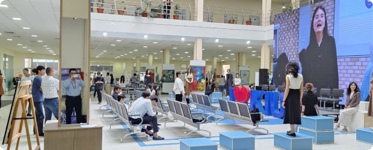
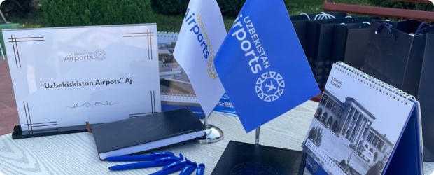
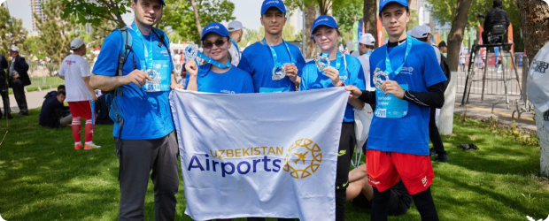

Блог и новости
Точка роста: Team-building сплотил более 100 представителей молодёжи Uzbekistan Airports
Масштабный форум под девизом «Объединится ради единой цели» прошёл в Международном аэропорту «Самарканд». Именно здесь, в стенах первого ультрасовременного комплекса, молодые специалисты получили существенную мотивацию и импульс к ещё большему развитию и совершенствованию своих навыков в выбранной ими профессии.
Повестка двухдневного мероприятия, в котором приняли участие сотни молодых специалистов различных структурных подразделений АО «Uzbekistan Airports», была весьма насыщенной. Встреча, призванная стать точкой притяжения инициатив и новых идей, общения и единства в деле развития сферы деятельности аэропортового сектора включила в себя различные встречи и дискуссии по вопросам сотрудничества и взаимодействия, интерактивное общение с руководством компании, командные соревнования на эрудицию и логику по авиационной тематике, обсуждение предложений и проектов молодых специалистов.
«Это был настоящий прорыв, — говорит старший смены Службы безопасности Международного аэропорта „Бухара“ Эркин Холов. — Эта встреча и общение, особенно с Председателем правления, стала очень мощной мотивацией. И, я уверен, что не только для меня, но и для моих коллег тоже. Нас будто зарядили. Нас воодушевили и самое главное, сплотили!
Говоря о предложениях и идеях молодых специалистов, следует особо подчеркнуть, что на сегодняшний день, в компании реализовано много новшеств и проектов, инициированных молодёжью.
-
- 
-
2 мая компания «Uzbekistan Airports» приняла участие в ярмарке вакансий в Ташкентском Международном Университете Кимё.
Сотрудники компании активно взаимодействовали с посетителями ярмарки, предоставляя информацию о своей деятельности, отвечая на вопросы и предлагая возможности трудоустройства.
Подробнее
-
- 
-
26 апреля компания «Uzbekistan Airports» приняла участие в Международной ярмарке вакансий в сфере транспорта и логистики в Ташкентском Государственном Транспортном Университете.
Сотрудники компании активно взаимодействовали с посетителями ярмарки, предоставляя информацию о своей деятельности, отвечая на вопросы и предлагая возможности трудоустройства.
Подробнее
Компания «Uzbekistan Airports» уверена в своей способности привлечь новых сотрудников, которые разделяют её ценности и готовы внести свой вклад в развитие бизнеса.
-
- 
-
🏃♂️ 21 апреля состоялся VI Ташкентский международный марафон BYD.
Сотрудники «Uzbekistan Airports» вступили в строй на улицах Ташкента, участвуя в шестом международном Ташкентском марафоне. Это событие не только подчеркнуло спортивные достижения, но и акцентировало внимание на здоровом образе жизни, поддерживаемом компанией. 🏆
Подробнее
Компания Uzbekistan Airports, управляющая 11 международными аэропортами в Узбекистане, приняла участие в ежегодной выставке Job Fair проводимой центром развития карьеры Международного Вестминстерского университета г. Ташкент.
Компания Uzbekistan Airports, управляющая 11 международными аэропортами в Узбекистане, приняла деятельное участие в ежегодной выставке Job Fair проводимой центром развития карьеры Международного Вестминстерского университета г. Ташкент.
Студенты университета получили уникальный шанс ознакомиться с деятельностью Uzbekistan Airports и предоставляемыми компанией возможностями построения карьеры и развития профессионального роста, а так же были проинформированы о наличии портала вакансий, где можно ознакомиться со всеми имеющимися вакансиями в управляющей компании Uzbekistan Airports и входящих в её состав предприятиях — 11 аэропортов, UzPort и UzCargo и предъявляемыми требованиями к кандидатам. В случае заинтересованности — сразу подать электронную заявку работодателю.
В ходе мероприятия студентам, заинтересовавшимся работой в Uzbekistan Airports рассказали о созданных рабочих условиях и перспективах компании. Были приняты на рассмотрения резюме выпускников ВУЗа, а также раздали подарки с фирменной атрибутикой компании.
В СМИ распространилась информация по факту мошенничества в деле трудоустройства на работу в Ташкентский международный аэропорт.
Компания Uzbekistan Airports, управляющая 11 международными аэропортами в Узбекистане, приняла деятельное участие в ежегодной выставке Job Fair проводимой центром развития карьеры Международного Вестминстерского университета г. Ташкент.
Студенты университета получили уникальный шанс ознакомиться с деятельностью Uzbekistan Airports и предоставляемыми компанией возможностями построения карьеры и развития профессионального роста, а так же были проинформированы о наличии портала вакансий, где можно ознакомиться со всеми имеющимися вакансиями в управляющей компании Uzbekistan Airports и входящих в её состав предприятиях — 11 аэропортов, UzPort и UzCargo и предъявляемыми требованиями к кандидатам. В случае заинтересованности — сразу подать электронную заявку работодателю.
В ходе мероприятия студентам, заинтересовавшимся работой в Uzbekistan Airports рассказали о созданных рабочих условиях и перспективах компании. Были приняты на рассмотрения резюме выпускников ВУЗа, а также раздали подарки с фирменной атрибутикой компании.